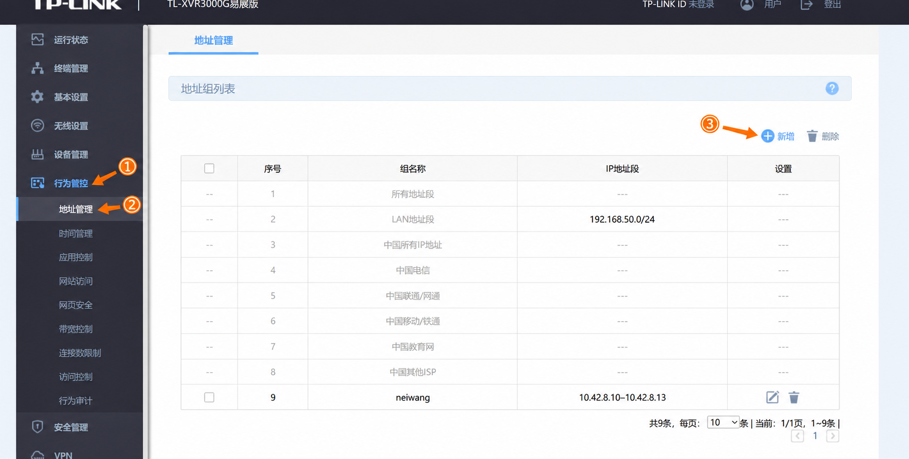
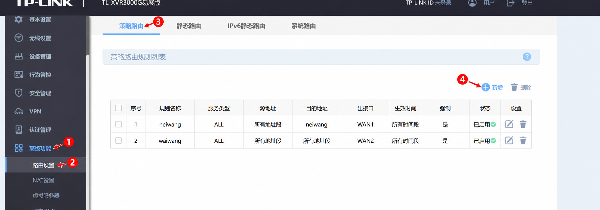

用双 WAN 路由器把内网和上网分开
为什么要让内网和外网走不同 WAN 口
我手上有两条网，一条能连内网服务器，另一条用来上网。电脑平时用 Wi-Fi，我想让它只连一个 Wi-Fi，SSH 到指定的四个内网地址时走内网线，平时开网页、下载就走普通宽带。两边都有有线接入，我就买了台 TP-LINK TL-XVR3000G 易展版，把选路这件事放到路由器上做。我用两条策略路由来选出口。目的 IP 在服务器地址组里的流量走 WAN1，其余 IPv4 流量走 WAN2。
挑路由器的时候我先看有没有两个 WAN 口，还专门确认了原厂后台能不能按目的 IP指定出口。产品页写着「双 WAN」时，还要看有没有「策略路由」这一项。带宽均衡能利用两条线路，我这里需要的是某些 IP 固定走其中一条。XVR3000G 的原厂固件就能直接配。 型号规格
双 WAN 接线和策略路由配置
后台在「基本设置 → 接口模式」选双 WAN。内网插 WAN1，普通宽带插 WAN2，在「WAN 设置」里分别填各自的上联参数。路由器给电脑分配的 LAN 网段要和两条 WAN 的接入网段错开。例如 LAN 可以用 192.168.50.0/24。 安装手册
先把四个内网地址放到一组
点「行为管控 → 地址管理 → 新增」，在 IP 地址列表里逐个填入要访问的服务器地址。下面用 10.42.8.10 到 10.42.8.13 举例，再把这四项加进名为 neiwang 的地址组。图里的 LAN 一行是路由器下发给电脑的网段，和服务器地址组分开放。 普联配置示例


再按目的 IP 配两条策略路由
点「高级功能 → 路由设置 → 策略路由 → 新增」。两条规则的源地址都选「所有地址段」。第一条的目的地址选刚建好的 neiwang，出口选 WAN1。保存后再点一次「新增」，按下表配置 WAN2。


| 顺序 | 目的地址 | 出接口 |
|---|---|---|
| 1 · 内网 | 内网地址组 | WAN1 |
| 2 · 上网 | 所有地址段 | WAN2 |
两条都启用，服务类型选 ALL，时间选全天，再勾选「强制」。内网那条一定放在前面。路由器从上往下匹配，先处理四个具体地址，剩下的再走 WAN2。 规则优先级说明
用 SSH 和 tracert 验证两个出口
电脑一直连着新路由器的 Wi-Fi，先用 SSH 实际登录内网服务器，再打开一个普通网站。Windows 上也可以用下面两条命令，一条测 SSH 端口，一条看公网目标的前几跳。把示例 IP 换成自己的内网服务器地址。 Windows tracert 文档
Test-NetConnection 10.42.8.11 -Port 22
tracert -4 -d -h 3 www.baidu.com登录后在服务器上执行 printenv SSH_CONNECTION，第一项就是服务器看到的客户端地址。实测时，两台内网服务器都能登录，看到的来源都是 WAN1 的内网侧地址。到百度的 IPv4 路径第一跳是新路由器，第二跳和后台的 WAN2 网关对得上。这样，同一台电脑只连一个 Wi-Fi，就能 SSH 到内网，也能从普通宽带上网。